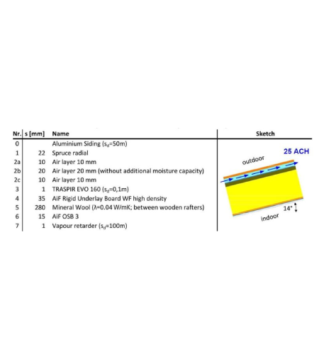
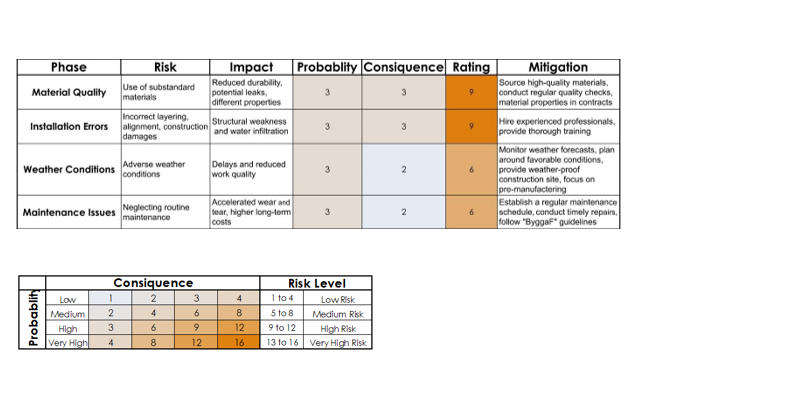

MOISTURE SAFETY DESIGN OF BUILDINGS
Two group assignments, one question: will a building envelope stay moisture-safe over time — and does the answer change once the climate does? Both used WUFI Pro 6.8 to simulate hygrothermal performance of a building component, benchmarked against the VTT mould growth model (mould index 0–6, critical when relative humidity exceeds 80% at temperatures above 5°C for a sustained period).
Assignment 1 assessed an exterior brick wall in Lund's climate; Assignment 2 assessed a south-west facing, 14°-pitched roof, then re-ran the improved design against a projected future climate file to check whether today's fix still holds up in tomorrow's weather.

ASSIGNMENT 1 — EXTERIOR WALL
The given brick wall (0.465 m thick, U-value 0.124 W/m²K) had three problems: constantly high moisture in the brick façade, condensation risk in the outermost insulation, and mould risk deeper in the insulation. The single biggest fix was a ventilated air-gap behind the brick (50 air changes per hour) — changing insulation materials or vapour barrier sd-values barely moved the needle, since the moisture source was driving rain, not vapour diffusion from indoors.
ASSIGNMENT 2 — ROOF ANALYSIS
The given roof (0.406 m, U-value 0.111 W/m²K) showed real mould risk in three layers over a three-year simulation: mould index reached 1.78 in the spruce deck and 1.81 in the wood-fibre board — both well past the "initial growth" threshold of 1. As with the wall, ventilating the roof cavity (25 air changes per hour) plus a weather barrier and a less hygroscopic underlay board did the most work, reducing the plausibility-check mould index in the spruce deck to a practically flat 0.04.
Re-running the improved roof against a projected future climate for Göteborg (mean outdoor RH up 6.3%, more wind-driven rain, higher temperature swings) still held: maximum mould index actually dropped slightly, from 1.81 in the base case to 1.76 in the insulation layer, with 89–93% of hours across all layers showing a negative (drying) mould growth rate.
RISK ASSESSMENT

TAKEAWAYS
- Cavity ventilation is the primary hygrothermal control. A ventilated air gap behind exterior claddings consistently outperforms material substitution and vapour barrier adjustments[cite: 11].
- Moisture source diagnosis dictates envelope detailing. Driving rain infiltration requires capillary breaks and drainage paths rather than increased interior vapour retarder resistance[cite: 11].
- Ventilated assemblies provide climate resilience. The improved roof maintained safety margins under future weather projections (mould index remaining below critical thresholds) due to sustained drying potential[cite: 11].
- Initial simulation boundaries influence long-term risk. Accounting for construction start seasons demonstrates that summer starts maximize initial drying before critical cold-weather moisture loading begins[cite: 11].